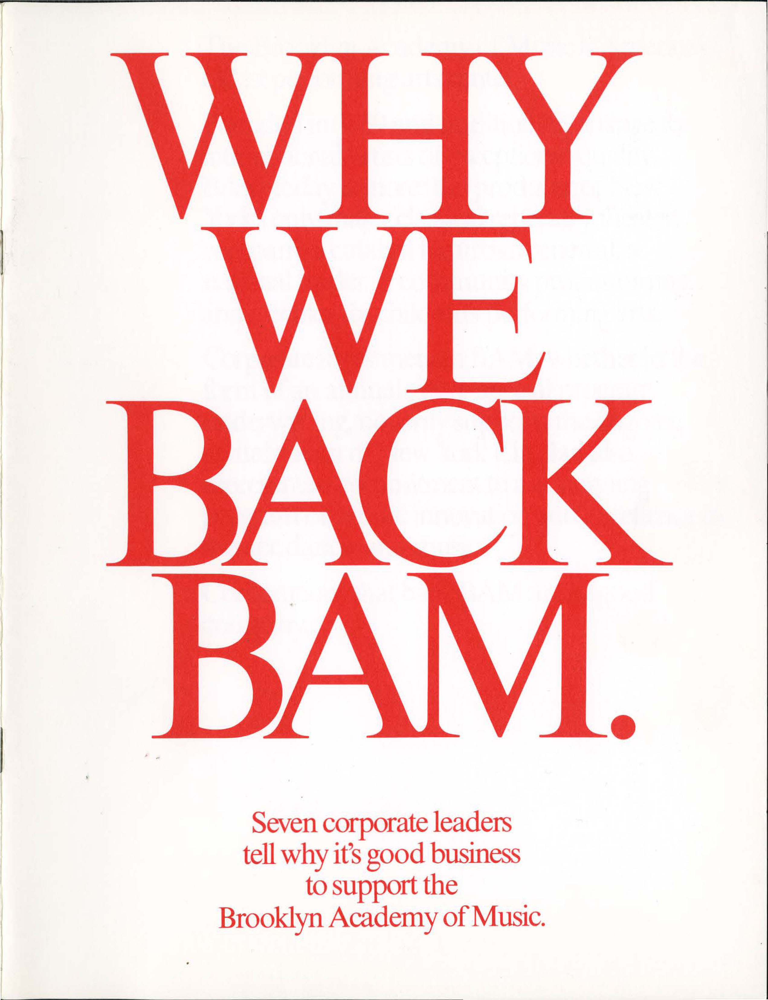
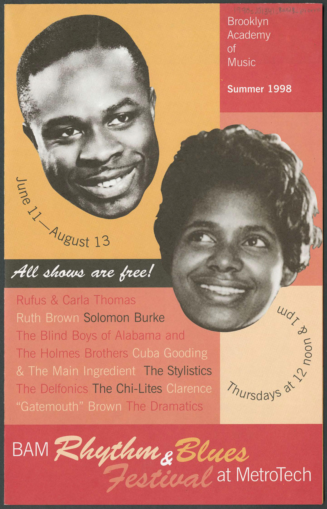
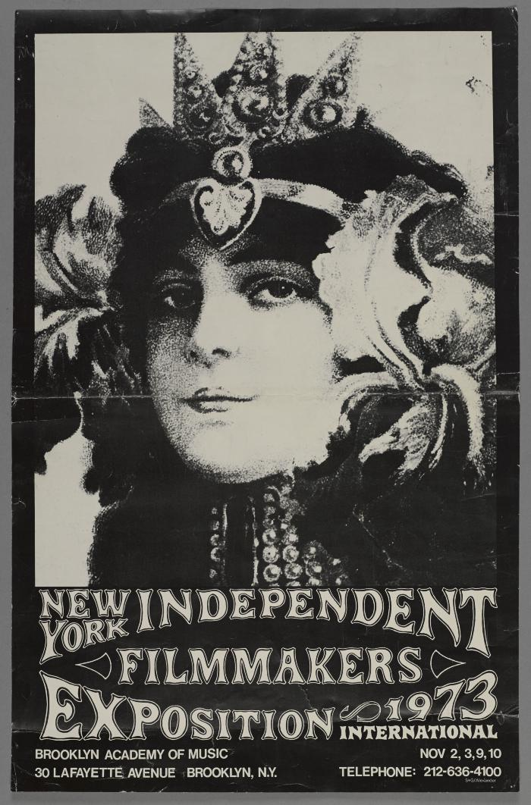
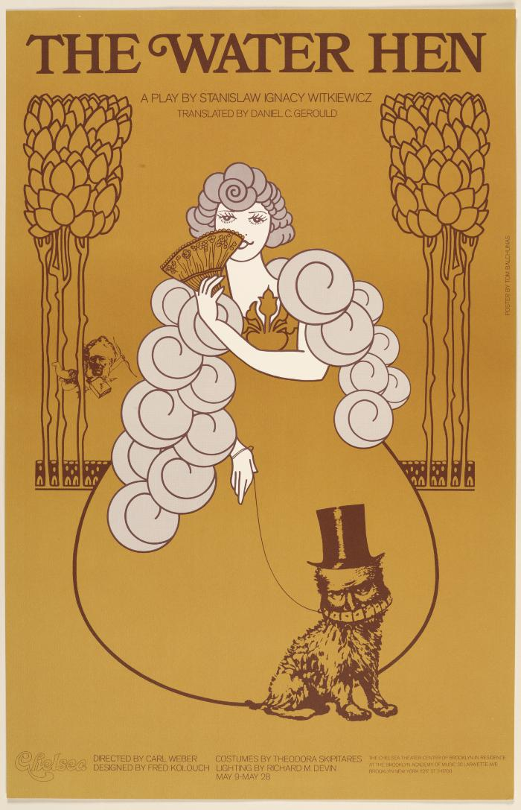

This annual event is a very important part of BAM's process, the appropriate documents go to Archives, we clean up what we no longer need, and possibly most importantly, we all get free stuff off of the Share Table!
Now that the majority of our work is done electronically, much of our needed cleanup is digital. The mess is harder to see than piles of paper or stacks of boxes, but it's just as important to clean up. Saving electronic files you don't need is a cost to BAM in terms of storage space and unnecessary additional backup processing.
Archives Director, Sharon Lehner, creates the first Records Retention Manual.
The first Records Day is scheduled to address physical records on-site.
The first Digital Records Day is planned by I.T. in an effort to resolve a problem with dwindling server space. While many users simply saved files without ever deleting duplicates or outdated versions, the Archives recognized that some significant records were no longer on paper and began to request that departments consider moving final versions of documents to an "_Archive" folder on a shared server.
Digital Records Day and Records Day (for physical material) were held on separate afternoons.
For Digital Records Day In the summer of 2015, Archives distributed detailed guidelines for departments to use the "_Archive" folder, but it became clear that a more structured approach was needed if we were to seriously follow our records retention requirements as they applied to digital records.
In the fall, Archives began working on a more comprehensive approach to collecting digital records through participation in the National Digital Stewardship Residency (NDSR) program. An NDSR Fellow devoted nine months to both modifying the Records Retention Manual to account for digital materials.
A records coordinator and point person is appointed in each department through a collaboration with the Archives.
After submitting a proposal concerning email archiving at BAM, a Metropolitan New York Library Council (METRO) fellow joins the Archives to continue reviewing digital workflows.
In recognition of the fact that records are produced in digital form as often as physical, if not more so, this summer will be the first combined Records Day.
Featured Archives Item: Brochure for Why We Back BAM (1981).View item in BAM Digital Archives
Featured Archives Item: Brochure for BAM Rhythm and Blues Festival at Metrotech (1998).View item in BAM Digital Archives
Featured Archives Item: Poster for the New York Independent Filmmakers Exposition (1973).View item in BAM Digital Archives
Featured Archives Item: Poster for the Chelsea Theater production "The Water Hen" during BAM Spring Series (1972).View item in BAM Digital Archives